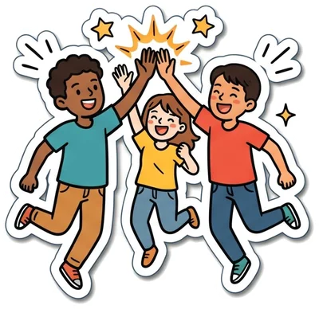
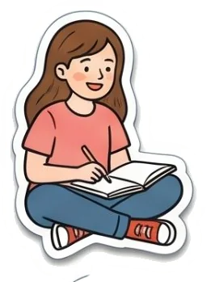
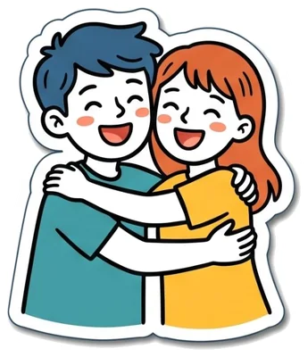
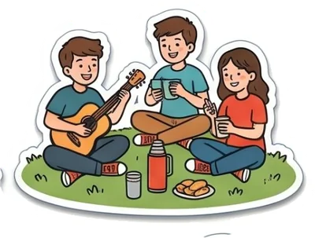
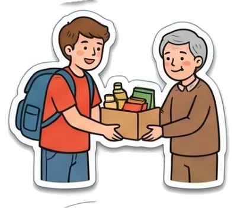
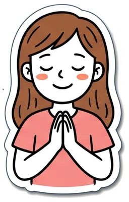
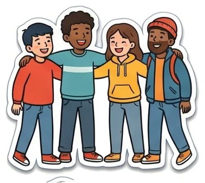
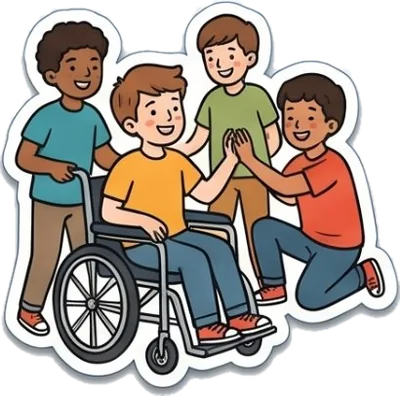

Hay un lugar para ti

toca para seguir →¿Cuándo fue la última vez que alguien te preguntó cómo estás…
…y esperó de verdad tu respuesta?

Te dijeron que ser feliz era fácil.
No lo es.
Pero no tienes que hacerlo solo.

donde llegas cansado, te sientas, alguien te pregunta cómo estás de verdad… y sales más liviano.
Eso es Ágape.
«Ágape» es una palabra griega antigua. Significa un amor que se da sin esperar nada a cambio.

Más que reuniones

Ayudar a otros
Rezar, o solo estar en silencio
Amigos que se quedanAlgunos llegan con ganas de hacer cosas.
Otros, con ganas de que alguien los escuche.
Aquí caben los dos.
Elige tu puerta
Elige la que más se parezca a ti. No hay respuestas malas.
De esos que se quedan.
Que se acuerdan de tu cumpleaños, que te esperan si llegas tarde y que no se van cuando las cosas se ponen difíciles.
Aquí nadie mira desde afuera: cada uno tiene su lugar.
No eres raro por buscarlo.
Esa sensación de que la vida tiene que ser más que esto… muchos la sentimos.
Aquí la buscamos juntos, con calma, sin que nadie te apure ni te juzgue.
Tu tiempo puede cambiar un día.
Visitar a quien está solo, preparar un encuentro, ayudar en una campaña, plantar algo que crece.
Cuando das, descubres todo lo que tienes para dar.
Bien. Las preguntas no te dejan afuera.
Son una buena forma de empezar. Aquí puedes preguntar lo que quieras.
Nadie tiene todas las respuestas. Las buscamos juntos.
Crees mucho, poco o nada.
Llegas con preguntas, con heridas o con ganas.
Igual hay lugar para ti.
No necesitas tenerlo todo claro para venir. Ni saber cómo se hace nada.

Piensa en lo que traes hoy: una persona, una preocupación, algo que agradeces.
Ven a ver.
Sin compromiso. Trae a un amigo si quieres. Solo ven.